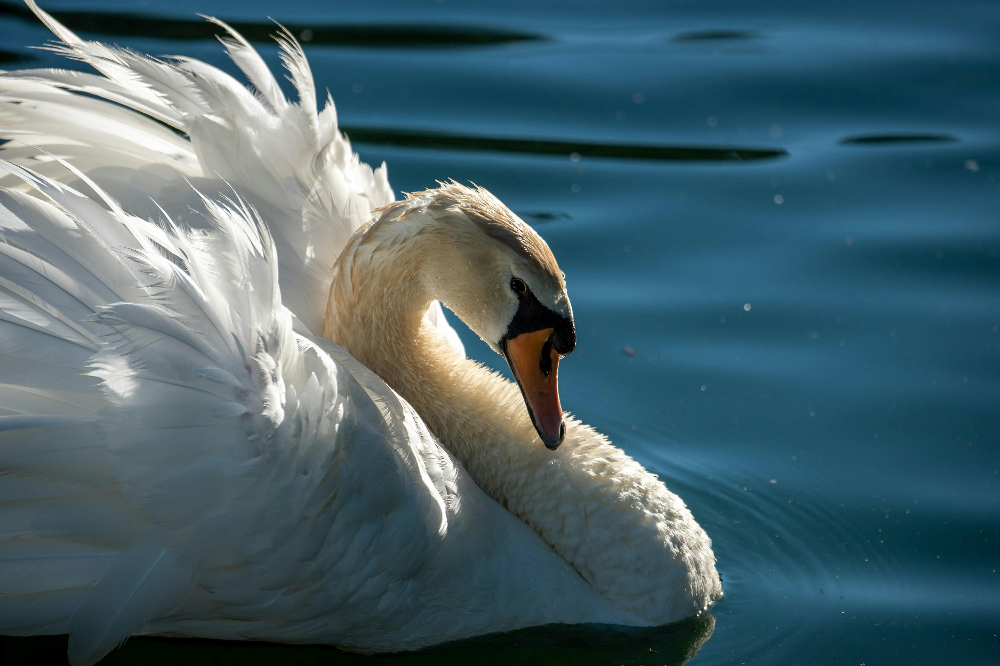

어느 날 저녁, 태양이 자취를 감추자 갈대밭에서 아주 멋지고 커다란 새 무리가 나타났다. 아기 오리는 그렇게 아름다운 새를 본 적이 없었다. 이 새들은 우아하고 긴 목이 달렸는데 새하얗게 빛났다. 백조였다. 이 새들은 보다 따뜻한 땅, 그리고 드넓은 물을 향해 이 차가운 땅에서 날아오르려 웅장한 날개를 펴며 이상한 울음을 토해냈다. 새들은 높이, 아주 높이 올라갔다. 못생긴 아기 오리는 이 새들을 지켜보면서 왠지 모르게 마음이 불편했다. 물속을 바퀴처럼 빙글빙글 돌았다. 아기 오리는 이 새들이 지나간 자리를 따라서 목을 길게 빼고는 기괴하고도 야릇한 소리를 질렀다. 스스로도 깜짝 놀랐다. 아! 아기 오리는 저 화려하고 행복한 새들을 잊을 수가 없었다. 더 이상 그 새들이 눈에 들어오지 않게 되었을 때, 아주 깊숙이 물속으로 들어갔다. 다시 물 위로 올라왔을 때는 어쩔 줄을 몰랐다. 그 새들이 무슨 새인지, 어디로 가는지 몰랐다. 하지만 그 어느 것보다 그 새들을 사랑했다. 부러워서가 아니었다. 어떻게 자신이 그렇게나 대단한 아름다움을 꿈꾸고 바랄 수 있을까? 오리들이 자신을 견뎌준다면 그저 고맙기만 할 것이다. 가엾은 미운 아기 오리.

겨울은 점점 추워졌다. 어찌나 추운지 물이 얼지 않도록 계속해서 물속에서 이리저리 헤엄쳐야 했다. 하지만 밤마다 헤엄치는 구멍은 계속해서 작아졌다. 이윽고 물이 꽁꽁 얼어서 오리는 그 쩍쩍거리는 얼음이 다가오지 못하도록 계속 움직였다. 마침내 움직이기도 너무 지쳤다 얼음 속에서 꽁꽁 얼어붙고 말았다.
아침 일찍 농부가 지나가다가 보고 연못으로 가서 나무 신발로 얼음을 깨고는 아기 오리를 아내가 있는 집으로 데려갔다. 거기에서 살아나긴 했지만, 아이들이 오리와 놀려고 했을 때, 오리는 자신을 해치는 줄 알고 놀라 우유 통으로 뛰어 들어가다가 사방에 우유를 흩뿌리고 말았다. 부인이 비명을 질러대며 두 손을 들어 올리자 오리는 버터 통으로 날아갔다가 여물통을 드나들었다. 이제 오리가 어찌 보이는지 상상해 보라! 여인은 비명을 지르며 부집게로 오리를 후려쳤다. 아이들은 오리를 잡으려다 서로 걸려 넘어졌다. 깔깔 웃으며 소리를 질러댔다. 다행히도 문이 열려 있었다. 오리는 수풀 속으로 달아났다. 그곳 새로 내린 눈 속에 어리둥절한 채 잠자코 있었다.
오리가 이 혹독한 겨울 동안 견뎌야 했던 고난과 비참함은 너무 슬퍼서 이루 다 말로 표현할 수 없을 것이다. 따뜻한 태양이 한 번 더 비출 때, 아기 오리는 그래도 늪지 갈대밭에서 목숨을 부지하고 있었다. 종달새가 다시 지저귀기 시작했다. 아름다운 봄이 되었다.
그런데 문득 아기 오리는 날개를 들어보았다. 전보다 더 힘차게 공기를 갈랐다. 힘이 좋으니 오리의 몸을 멀리 데리고 나갔다. 무슨 일인지 미처 알아차리기도 전에 자신이 사과나무 꽃이 활짝 핀 커다란 정원에 있다는 것을 알았다. 달콤한 라일락 향기 가득하고 긴 꽃송이가 달린 초록색 가지가 구불구불 흐르는 시내 위로 드리워져 있다. 아, 여기는 무척이나 사랑스럽고 싱그러운 봄이다!
미운 오리 앞 덤불 속에서 아름다운 하얀 백조 세 마리가 다가왔다. 백조들은 깃털을 곤두세우고는 시냇물 속에서 경쾌하게 헤엄쳤다. 아기 오리는 저 고상한 동물들을 알아보았다. 그러자 야릇한 슬픔이 밀려왔다.
“난 저 고귀한 새들 가까이 날아가겠어. 저 새들은 나를 콕콕 찌르려 들겠지. 못생긴 주제에 다가온다고 말이야. 하지만 난 신경 쓰지 않겠어. 저 백조들한테 죽는 게 더 나아, 오리들한테 물리고, 암탉한테 쪼이고, 닭장 소녀한테 발로 차이고, 겨울에 죽도록 고생하는 것보다는…….”